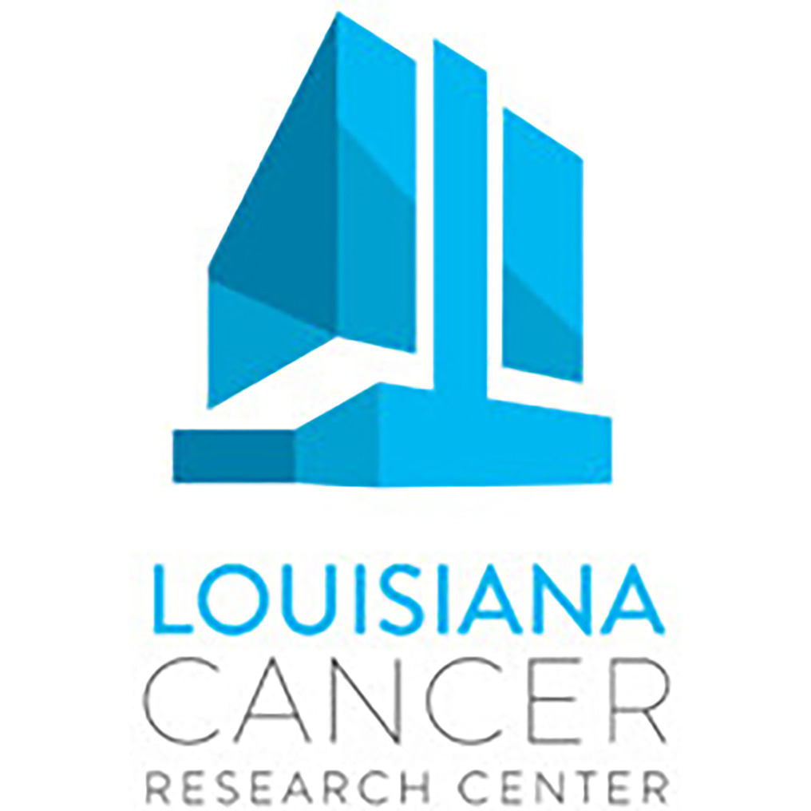
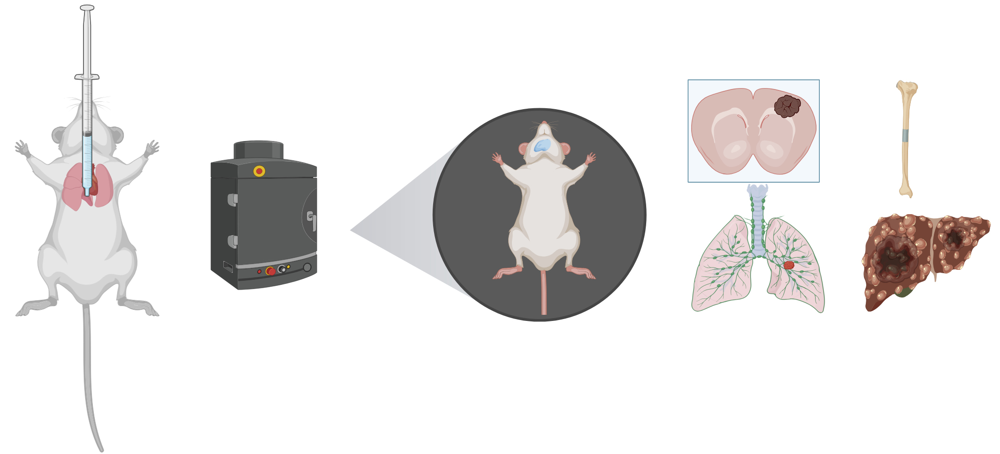
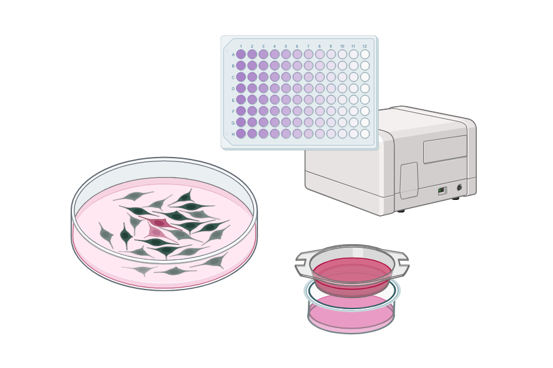
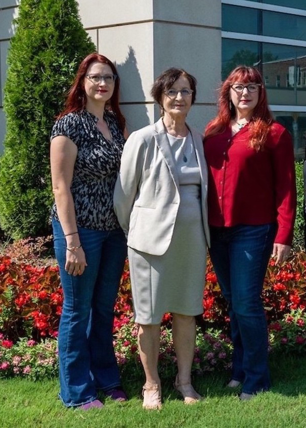
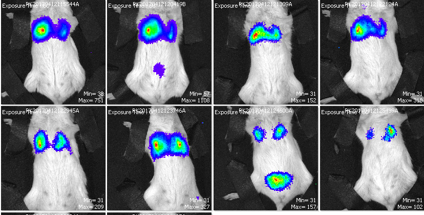
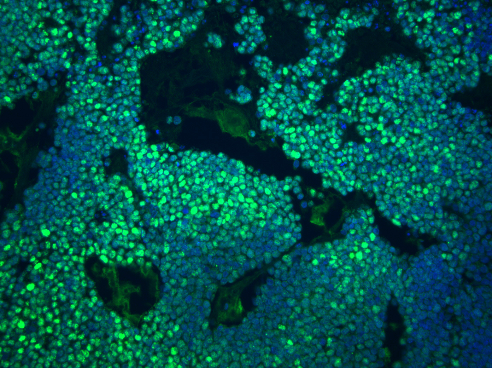

Scientific consultant, educator, speaker, and grant writing expert at the intersection of rigorous research and real-world impact. Empowering scientists, institutions, and organizations to communicate, compete, and succeed.
Affiliations & professional service

From the lecture hall to the boardroom — expert guidance in scientific education, consulting, communication, and funding strategy.
Professional development programs, bootcamps, and curricula designed for scientists at all career stages — from graduate students to industry professionals seeking to sharpen their skills.
Strategic scientific advisor for biotech and life sciences organizations, specializing in pre-clinical cancer research, small molecule drug development and efficacy testing in the metastatic setting. Research design, data interpretation, translational planning, and expert guidance to move your program forward.
Compelling keynotes, invited talks, and panel discussions for conferences, symposia, and institutional events. Topics spanning cutting-edge science, career development, and scientific leadership.
Hands-on instruction in scientific writing for researchers and professionals. Covering manuscript preparation, clarity of argument, peer-review response, and research communication for diverse audiences.
Intensive training in grant strategy, proposal architecture, and persuasive scientific narrative. Includes mock study sections and how to respond to peer reviews. Covering NIH, DoD, foundation, and industry mechanisms for investigators at every career level.

Metastasis model workflow
University course instruction, new course development, and curriculum development in the life sciences. Committed to inclusive, evidence- based pedagogy that prepares the next generation of scientists.

2D cell culture assays
Illustrations created with BioRender.com
I am a Professor of Medicine at Tulane University, Program Leader for Cancer Biology at the Tulane Cancer Center, and Program Leader in Tumor Cell Biology at the Louisiana Cancer Research Consortium (LCRC), with more than 25 years of experience in academic research, scientific leadership, and professional education.
My laboratory investigates the mechanisms driving metastatic breast cancer — with a particular focus on hypoxia-inducible factors (HIF-1 and HIF-2), the tumor microenvironment, and novel therapeutic strategies for triple-negative and taxane-resistant breast cancers. That hands-on research experience informs everything I do as a consultant, educator, and speaker.
My rare combination of a PhD in Cell and Molecular Biology, an MBA with a focus in Food & Drug Law, and a Project Management Professional (PMP) certification allows me to bridge rigorous science with the strategic, regulatory, and operational realities that organizations face.



Peer-reviewed research in metastatic breast cancer, hypoxia signaling, and novel therapeutics. For a complete list, see PubMed, ORCID, or Google Scholar.
Breast cancer brain metastasis represents a significant clinical challenge with approximately 30% of metastatic breast cancer patients developing brain involvement, particularly those with aggressive subtypes like triple-negative breast cancer. We developed two colchicine binding site inhibitors targeting tubulin—SB-216 and SP-1-39—demonstrating potent preclinical activity against brain and extracranial metastases. These compounds cross the blood-brain barrier, inhibit cell growth and migration, and induce apoptosis with low nanomolar potencies. In preventive dosing studies, SB-216 reduced brain and concurrent extracranial metastases while extending overall survival. When tested in a taxane-resistant patient-derived triple-negative model, SP-1-39 markedly reduced both brain and extracranial tumor burden.
Triple-negative breast cancer (TNBC) represents roughly 15% of all breast cancer cases, characterized by absence of estrogen receptor, progesterone receptor, and HER2 expression. Approximately 40% of TNBC patients develop metastatic disease with median survival of 13.3 months. Colchicine-binding site inhibitors (CBSIs) represent an alternative to taxanes, targeting tubulin to trigger G2/M arrest and apoptosis while circumventing taxane resistance. SP-1-39, a novel CBSI, demonstrates potent anticancer activity in paclitaxel-resistant models and upregulates PD-L1 expression in vitro, suggesting potential synergy with immunotherapy. Results support SP-1-39 as a promising therapeutic agent for TNBC, either administered independently or alongside anti-PD-L1 checkpoint inhibition.
Triple-negative breast cancer (TNBC) presents significant treatment challenges, particularly regarding resistance to microtubule-targeting agents like paclitaxel — approximately 70% of patients who initially respond will develop taxane resistance. The compound 60c is an improved colchicine-binding site inhibitor designed to enhance potency and metabolic stability over its predecessor VERU-111. In vivo studies show 60c suppresses primary tumor growth and axillary lymph node metastases without significant toxicity, completely suppresses metastases to the spleen, and is more potent than VERU-111 in reducing metastatic burden in bone and kidney. These findings position 60c as a promising candidate for taxane-resistant TNBC.
Corticosteroids work through glucocorticoid receptors (GR) to manage inflammation and are commonly given to breast cancer patients undergoing chemotherapy. Triple-negative breast cancers often express high GR levels, and while GR promotes TNBC progression to metastatic disease, the underlying mechanisms remain elusive. We demonstrate that cellular stress activates p38 MAPK, which phosphorylates GR at Ser134, driving stress response genes even without ligand. Using CRISPR models, phospho-Ser134-GR was found to be required for TNBC metastatic colonization to the lungs. Transcriptome analysis identified PDK4 as a key downstream mediator of GR-driven migration and metabolic reprogramming, identifying PDK4 as a potential therapeutic target in TNBC.
Adaptation to hypoxia is a critical step in tumor progression, regulated in part by the transcription factor HIF-1α. Using conditional deletion of HIF-1α in mammary epithelium of transgenic mice, we demonstrate that loss of HIF-1α results in delayed tumor onset, reduced growth, decreased cell proliferation, and reduced vascularity during early progression. Most notably, deletion of HIF-1α in the mammary epithelium resulted in significantly decreased pulmonary metastasis, establishing HIF-1α transcriptional activity as a key driver of breast cancer metastatic potential.
The Pasteur effect — decreased oxidative phosphorylation and increased anaerobic fermentation under hypoxia — is among the most ancient cell-autonomous adaptations to oxygen deficiency. Here we present genetic and biochemical evidence that in mammalian cells, this metabolic switch is regulated by the transcription factor HIF-1. Cells lacking HIF-1α exhibit decreased growth rates during hypoxia, reduced lactic acid production, decreased acidosis, and dramatically lowered free ATP levels. These findings establish HIF-1 activation as an essential control element of the metabolic state during hypoxia, with important implications for cell growth during development, angiogenesis, and vascular injury.
"Dr. Seagroves transformed how our team approaches grant writing. Her workshop didn't just cover structure — she helped us find the story in our science. We submitted our R01 with real confidence for the first time."
— Assistant Professor, Department of Oncology, Major Research University
"Having Dr. Seagroves as our keynote speaker was a highlight of the symposium. She has a rare gift for making complex cancer biology accessible and inspiring to audiences at every career stage — our students were still talking about it weeks later."
— Program Director, Cancer Biology Graduate Program
"We brought Dr. Seagroves in to consult on our preclinical breast cancer program, and her guidance was invaluable. She identified gaps in our experimental design that we had completely overlooked and helped us reframe the science for our investors."
— Chief Scientific Officer, Oncology Biotech Company
Whether you need a quick second opinion or a long-term strategic partner, I'd love to hear about your challenge. I typically respond within one business day.